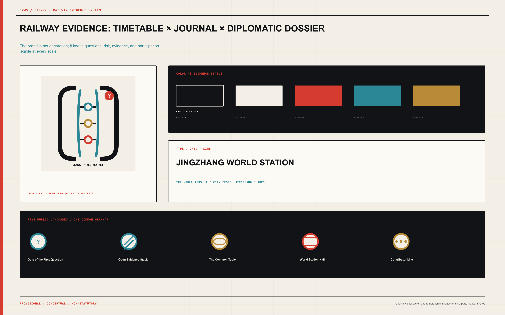
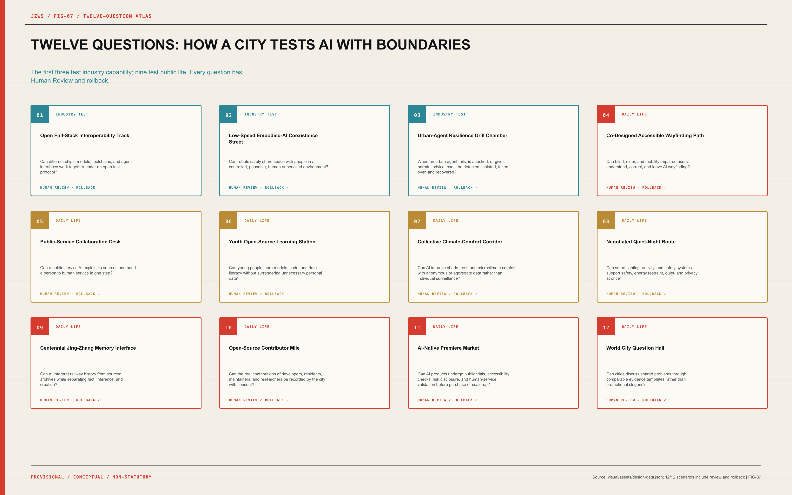
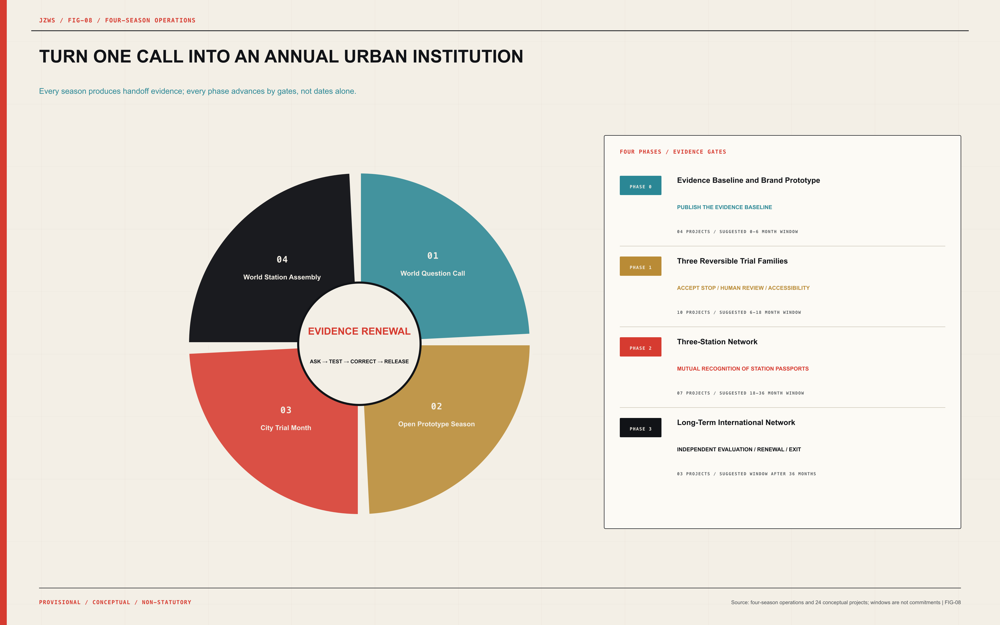

Coordinated Research
approx. 43.6 km²Organize world-city AI questions, industry, and regional exchange
JINGZHANG WORLD STATION / 2026
The world asks. The city tests. Jingzhang shares.
Not another AI display corridor, but public infrastructure through which the world asks, the city tests, and evidence travels.

01 / SCOPE
Coordinated Research defines questions, Overall Design organizes space, and Key Areas verify concrete thresholds.
Organize world-city AI questions, industry, and regional exchange
One line, two wings, three stations, land use, mobility, and phasing
Detailed mechanisms for Evidence Works, Commons Forum, and World Station Hall
02 / KEY AREAS
From independent technology to open evidence
From product prototypes to shared urban life
From urban evidence to global release

03 / LAND USE
Six conceptual roles cover the site without overlap; FAR, height, parking, and cost remain unknown.
1207Mobility / Question Line34.9 ha1401Green heritage base168.9 ha0802Evidence R&D203.8 ha0702Civic assembly142.8 ha05Global release116.8 ha16Verified reserve474.0 ha
04 / MOBILITY
The World Question Line prioritizes walking, cycling, wheelchairs, and low-speed trials; links show a network, not invented road redlines.

05 / BLUE-GREEN
Shade, stormwater, rest, quiet nights, and accessibility come before interactive screens; environmental data remain aggregate or anonymous.
06 / BUILDINGS + LANDMARKS
Eighteen small reversible modules test program capacity; five landmarks make questions, failure, participation, and real contribution visible.

07 / AI SCENARIOS
Three questions verify industry capability and nine verify public life; every AI scenario includes Human Review, rollback, and exit.
Can different chips, models, toolchains, and agent interfaces work together under an open test protocol?
Can robots safely share space with people in a controlled, pausable, human-supervised environment?
When an urban agent fails, is attacked, or gives harmful advice, can it be detected, isolated, taken over, and recovered?
Can blind, older, and mobility-impaired users understand, correct, and leave AI wayfinding?
Can a public-service AI explain its sources and hand a person to human service in one step?
Can young people learn models, code, and data literacy without surrendering unnecessary personal data?
Can AI improve shade, rest, and microclimate comfort with anonymous or aggregate data rather than individual surveillance?
Can smart lighting, activity, and safety systems support safety, energy restraint, quiet, and privacy at once?
Can AI interpret railway history from sourced archives while separating fact, inference, and creation?
Can the real contributions of developers, residents, maintainers, and researchers be recorded by the city with consent?
Can AI products undergo public trials, accessibility checks, risk disclosure, and human-service validation before purchase or scale-up?
Can cities discuss shared problems through comparable evidence templates rather than promotional slogans?

08 / METRICS

09 / DELIVERY + COMPLIANCE
Twenty-four conceptual projects advance through evidence gates; announcement clauses, agent.1–agent.6, six standards, and fifteen depth items all close.
Suggested 0-6 month window
04 CONCEPTUAL PROJECTSSuggested 6-18 month window
10 CONCEPTUAL PROJECTSSuggested 18-36 month window
07 CONCEPTUAL PROJECTSSuggested window after 36 months
03 CONCEPTUAL PROJECTS
10 / SOURCES
open-city-ai/haidian maintainers | Use: Submission contract, depth, bilingual, figure, HTML, PDF, and validation requirements | Limitation: Workflow authority, not a source of official site geometry
docs/formal-submission-guide.mdopen-city-ai/haidian maintainers | Use: Three positions, five functions, Three Zones and Two Wings, agent.1-agent.6 | Limitation: Agent-facing taskbook; does not replace statutory planning
brief/site-package/agent_taskbook.jsonopen-city-ai/haidian maintainers | Use: Provisional intake, topology generation, visualization, and validation | Limitation: Not official, precise, statutory, or approval-ready; all precision-sensitive outputs require recalculation
brief/site-package/geometry/provisional_boundaries.geojson北京市规划和自然资源委员会海淀分局 | Use: Official scope, key areas, tasks, and deliverable context | Limitation: Precise redlines and professional attachments were not publicly included in the repository package
https://ghzrzyw.beijing.gov.cn/zhengwuxinxi/tzgg/hd/202605/t20260509_4643047.html北京市科学技术委员会、中关村科技园区管理委员会 | Use: Nine-kilometre corridor, international network, AI city living room, standards, and cooperation-hub background | Limitation: Strategic background only; no parcel-level control
https://kw.beijing.gov.cn/xwdt/kcyx/xwdtcyfz/202604/t20260403_4573808.html北京市经济和信息化局 | Use: Technology, compute, data, scenarios, open source, ecosystem, and safety-governance alignment | Limitation: Citywide policy context; no project commitment
https://jxj.beijing.gov.cn/ztzl/ywzt/hbjh/hbdt/zcwj/rgznzc/202603/t20260316_4557526.html中华人民共和国外交部 | Use: International platforms, open cooperation, testing, evaluation, UN mechanisms, and capacity-building alignment | Limitation: National action-plan context; no local implementation commitment
https://www.mfa.gov.cn/web/ziliao_674904/1179_674909/202507/t20250726_11677803.shtml北京市服务业扩大开放综合试点 | Use: AI Origin community and global talent first-stop background | Limitation: Published descriptive figures require date-sensitive citation and are not parcel controls
https://open.beijing.gov.cn/html/haidian/gzdt/2026/1/1768186004465.htmlUnited Nations | Use: Global multistakeholder question-setting and dialogue mechanism | Limitation: Global governance precedent; not a direct local institutional template
https://www.un.org/global-dialogue-ai-governance/enUnited Nations Office for Digital and Emerging Technologies | Use: Bridge between evidence, regions, private practice, and implementation | Limitation: Program precedent; no spatial transfer without local adaptation
https://www.un.org/digital-emerging-technologies/content/ai-governance-humanity-labInternational Telecommunication Union | Use: Convening, demonstration, and global participation precedent | Limitation: Event precedent only; World Station adds a year-round urban test cycle
https://aiforgood.itu.int/summit26/practical-information/Infocomm Media Development Authority of Singapore | Use: Open testing toolkit, foundation community, and assurance sandbox precedent | Limitation: Testing mechanism requires local legal, technical, and sector adaptation
https://www.imda.gov.sg/how-we-can-help/ai-verifyNational Institute of Standards and Technology | Use: Measurement science, task groups, and cross-industry consortium precedent | Limitation: US institutional precedent; no implication of partnership
https://www.nist.gov/news-events/news/2026/05/nist-expands-ai-consortiums-scope-calls-new-membersEuropean Commission | Use: Real-world regulatory sandbox and safeguard precedent | Limitation: EU legal context; only the bounded-test mechanism is transferred
https://digital-strategy.ec.europa.eu/en/policies/regulatory-framework-aiOECD.AI | Use: Comparable voluntary cross-border reporting precedent | Limitation: Reporting precedent; not a certification or local legal requirement
https://oecd.ai/en/hiroshimaUniversité de Montréal | Use: Citizen consultation and multidisciplinary ethics precedent | Limitation: Ethical precedent; local consultation design remains conceptual
https://montrealdeclaration-responsibleai.com/the-declaration/UK AI Security Institute | Use: Independent evaluation, research, and international cooperation precedent | Limitation: Institutional precedent; no implication of partnership or approval
https://www.aisi.gov.uk/11 / ASSUMPTIONS
Repository provisional coordinates are preserved exactly. They are not an approval redline; the full chain must be recalculated when official data arrive.
The Overall Design Area uses the exact PROV-SITE-001 coordinates and never presents them as an official redline.
The affected decision remains conceptual and carries a verification or recalculation trigger.PROV-KEY-003 is preserved exactly despite its registered positional uncertainty.
The affected decision remains conceptual and carries a verification or recalculation trigger.Statutory land use, FAR, height, density, setbacks, daylight, and fire controls are absent.
The affected decision remains conceptual and carries a verification or recalculation trigger.Road redlines, rail safeguards, parking, utility, and flood-control data are absent.
The affected decision remains conceptual and carries a verification or recalculation trigger.Parcel ownership, acquisition, lease, and relocation conditions are absent.
The affected decision remains conceptual and carries a verification or recalculation trigger.The railway heritage inventory, grades, control zones, and structural surveys are absent.
The affected decision remains conceptual and carries a verification or recalculation trigger.Four-season operations and Evidence Passports are institutional prototypes without partner commitments.
The affected decision remains conceptual and carries a verification or recalculation trigger.Twelve questions, seven personas, five landmarks, four seasons, and twenty-four projects are proposal targets.
The affected decision remains conceptual and carries a verification or recalculation trigger.International cases are mechanism precedents; they imply no partnership, endorsement, or legal equivalence.
The affected decision remains conceptual and carries a verification or recalculation trigger.